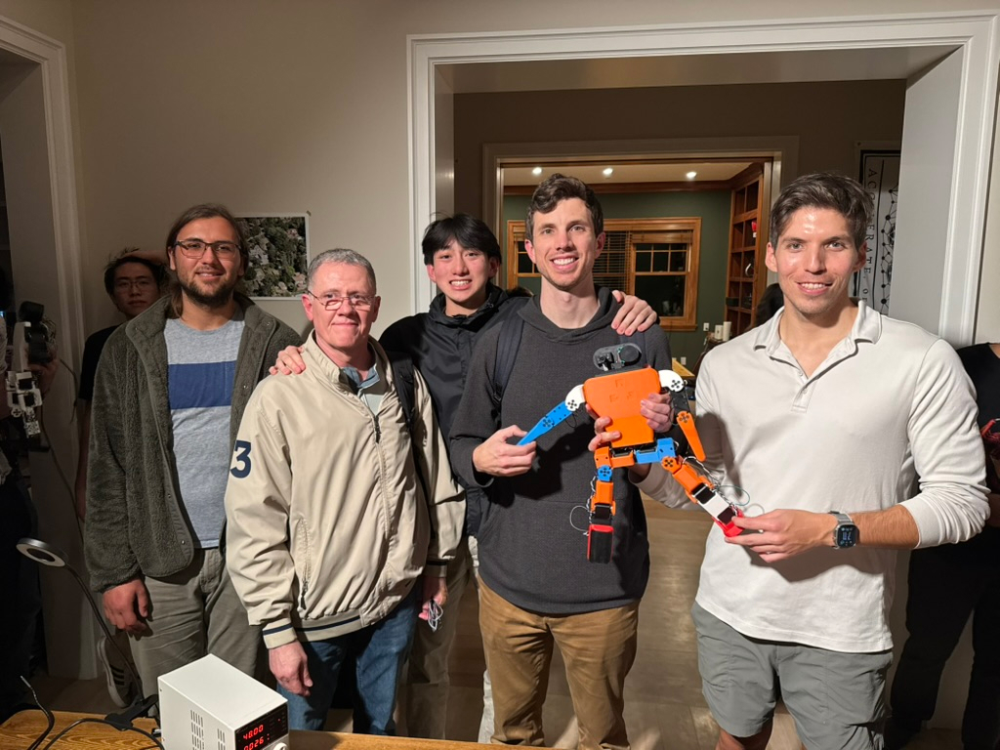

K-Scale Hackathon (2024-2025)
If you want to see the vibe and the kind of work being done at the K-Scale house during that time period, watch this video below. It sums it up pretty well: watch on YouTube.
In 2025, after I quit Double and was working on Antarctic, I took some time to socialize with other robotics hackers near me. Living in the Bay Area, there were a huge number of people building robots, and I got to see all kinds of wild projects.
During a social event hosted by GitHub at their San Francisco office, I met Ben Bolte, who casually mentioned he had been working on Tesla’s Optimus project and had just quit to go through YC and build his own humanoid robotics company. That was my introduction to K-Scale Labs.
K-Scale was a startup based in Atherton, California, close to where I live. I stopped by their hacker house (or hacker mansion, more accurately) and got to see, for the first time in my life, a humanoid robot in person. In late 2024, humanoid robots were all over X, but still rare to see in real life. I got nerd-sniped and started spending more time there, experimenting with their repo, and attending hackathons they hosted, including one on December 14, 2025.
The theme of the hackathon was robot olympics, and K-Scale opened up their hardware for events including dancing, boxing, soccer, and an open category. They had full-sized humanoids and a smaller platform they called Zeroth. I teamed up with other attendees: Kyle Kaveny, Michael Antoun, Marcus Veloso, Andy Prevalsky, and Neil Chen.
My main contribution was a simple Python script that used a camera feed to detect human motion, generate a skeleton wireframe, and translate that into motion commands for the Zeroth robot. Demo video: watch on YouTube.
That code was used for the dancing category, shown in the video below.
Other events our team participated in included boxing (where we went undefeated) and soccer, shown in the clips below.
Overall, our team placed 3rd (arguably 1st judging by crowd reactions), and we took home our own Zeroth robot as the prize. Weekend recap embedded below.
The first ever humanoid robots olympics went down this weekend at the @kscalelabs hackathon
— Gonzalo (@geepytee) December 16, 2024
We went undefeated in boxing ;) pic.twitter.com/9iL8wI3fRd
Unfortunately, K-Scale Labs is no longer around. You can read Ben’s writeup here. Zeroth still lives on and is being continued by ex-team members at zeroth0.com.
If you want one video that captures the vibe at the K-Scale house during that period, this is a great one.